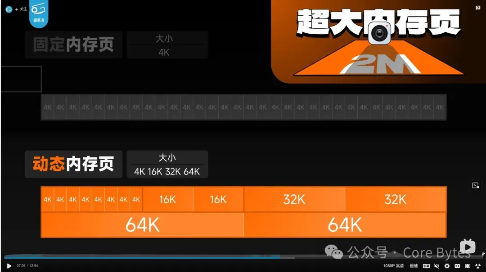
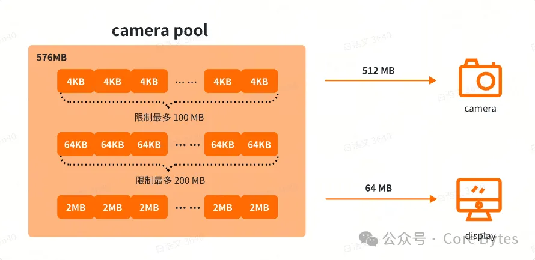
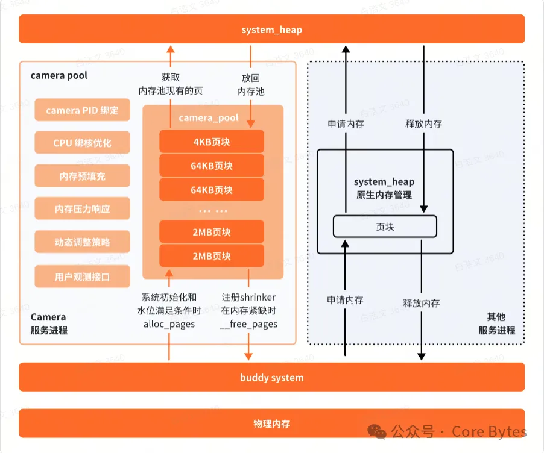
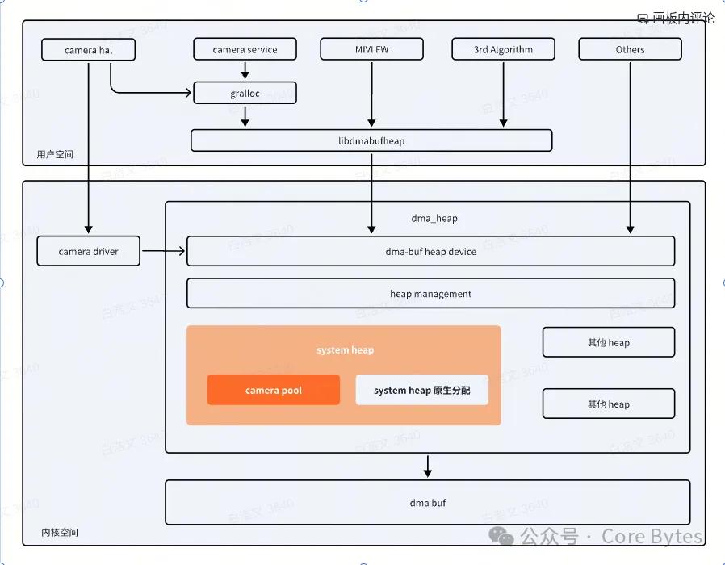
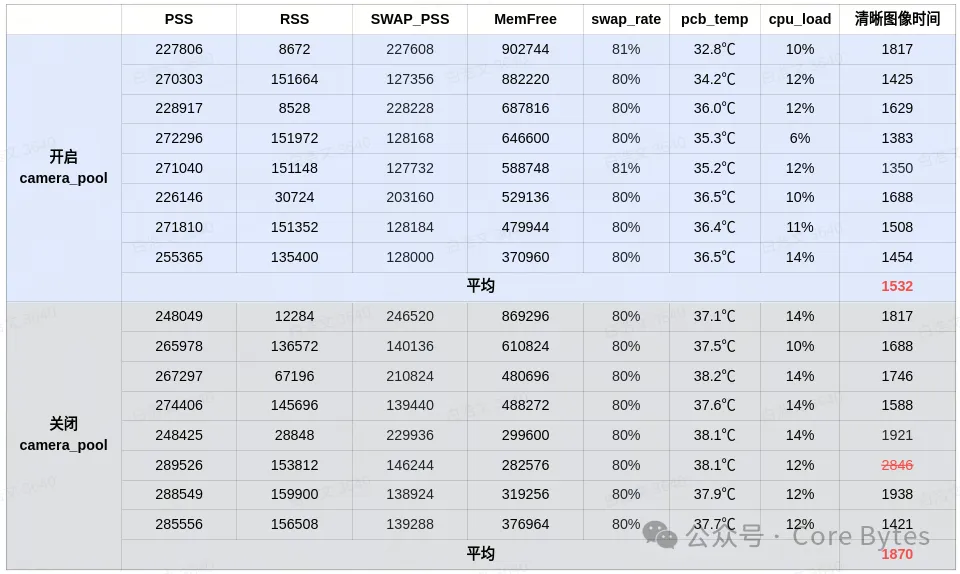
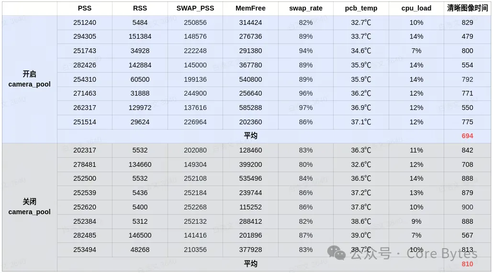
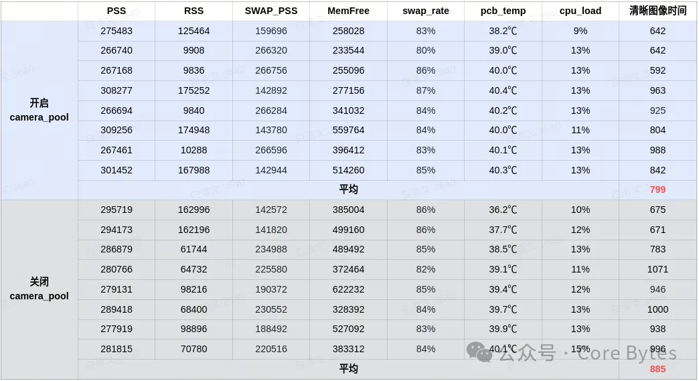
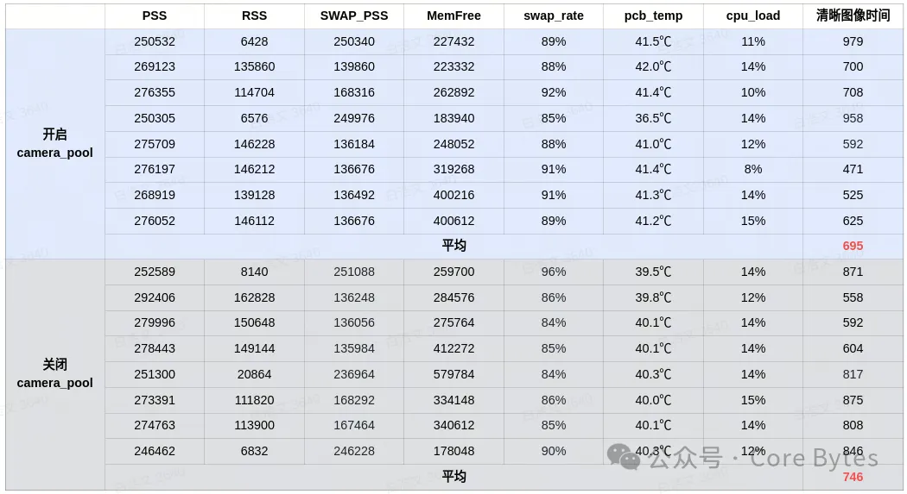

前言

小米15系列上手体验：能效给力，系统大优化！
在小米 15 的评测视频里看到动态内存特性，其中说的是 4/16/32/64K，甚至相机可以使用超大内存页面：2MB。近 2 年来，上游 Linux 内核社区非常热门的优化赛道就是大页内存，甚至说，各家手机终端厂商都推出了动态大页等特性（各家有各家的方案）。要知道，苹果早早就用上了 16K 页粒度，而 Andoird 阵营一直使用 4K 页粒度，直到 Android 15 才开始推进 16K 页粒度（静态），然而周期漫长，应用生态兼容困难，一部分应用无法运行。需要重新编译内核和应用。更大的页粒度可以大幅减少地址转换的开销和缺页异常次数。下面，我们针对图中的相机大页内存这一个点，讲讲可行的方案。
原理简介
内存优化的一个重要方法论，就是对于性能和稳定性要求高的模块，独自维护专属的内存池，如 gpu / wlan 等驱动。基于 dma-buf 框架的 systemp heap 分配接口的优点：
提供标准化的内存共享基础设施
实现真正的零拷贝数据传输通道
简化多设备多子系统协同工作的复杂性
保证内存 dma 能力和缓存一致性
camera 作为内存大户，需要从 dma-buf 中分配大量的 system_heap 内存，在内存紧缺时 system_heap 大部分内存可能已被其他进程占用，导致 camera 内存分配速度变慢。随着使用时间的增加，系统内存碎片化也变得严重，camera 需要大量的内存用于 dma 传输，碎片化的内存用于 dma 传输效率很低。这些内存问题使得相机开启速度、相机界面流畅度、扫码开启速度等用户体验受到一定的影响。
为了在低内存和碎片化严重的场景下 camera 也能有较好的使用体验，在 system_heap 中单独开辟一块 camera_pool 内存池专门为 camera 预留一部分内存，camera 相关的进程可以从中直接获取内存，而不需要走 alloc_page。同时 camera_pool 内存池中预留了更多的大页来保证 camera 可以使用更多连续的物理内存用于 dma 传输，使数据的传输速度更快。
实现方案
原生 system heap 使用轻量页池动态缓存，在分配内存时如果页池中有空闲页则获取没有则走 alloc_page 申请新的页；不区分应用程序，内存分配先到先得；没有专门对大页进行优先处理。通过创建 camera_pool 内存池来针对上述特征进行改进，优化 camera 的内存分配，同时预留了小部分内存供 display 使用。
在系统初始化时 camera_pool 从系统中分配 576MB，其中 512MB 用于 camera，64MB 用于 display 和其他应用。按照复合大页 2MB、64KB、4KB 三种大小按需分配给应用。在 camera 服务和 display 服务启动时将其 pid 记录到 camera_pool 中，只有相应服务子线程分配 dma-buf 时，才可以从中分配。在 system heap 分配和回收内存的函数中插入 camera_pool 相应接口，camera 服务和 display 服务优先通过接口从 camera_pool 内存池中获取和释放内存。
camera_pool 注册了shrink 接口，在系统内存非常紧缺时将 pool 的一部分内存回收返回给 buddy 系统，尽可能减少对系统的负面影响。回收时优先回收 4KB 页，再到 64KB 页，最后是 2MB 页，尽可能给大页更多的存活机会。 同时 camera_pool 的一个工作线程会通过水位和实际使用量，在需要时动态填充 camera_pool。
随着相机使用，可能存在 camera_pool 中 2MB 和 64KB 大页内存不断被分走，同时不断被填充 4KB 的单页内存，最终导致 camera_pool 内 4KB 的碎片化内存越来越多，这样也会导致分配和使用效率变低。通过限制其中 4KB 的总容量最多为 100MB，64KB 的最多 200MB，可以最大程度保证 camera_pool 中的大页数量。



收益测试
为了测试结果更贴近现实，在每次相机测试前都经过随机内存老化，来模拟用户日常随机使用的情况。内存紧缺场景的老化停止条件设置为 FreeMem 约 400M，swap 使用率 80%，cpu 负载不超过 10%。在不同测试样例下对比开启和关闭 camera_pool 时的内存分配速度和打开相机到画面出现清晰图像的耗时。
1. 内存紧缺场景 camera 内存分配速度提升 10 倍
针对内存宽松和内存紧缺场景，分别对比开启和关闭 camera_pool 功能的内存分配速度。在内存宽松场景下内存分配速度相差不大，因为 system_heap 和系统内存的剩余量充足，即使没有 camera_pool 也能基本满足内存需求，走 alloc_page 从系统分配内存也很快。而在内存紧缺场景下，开启 camera_pool 平均内存分配速度提升10倍以上。!

2. 三方相机打开速度提升 18%
开启 camera_pool 后相机清晰成像时间从 1870 ms 减少到 1532 ms，提升约 18% 。关闭 camera_pool 时相机受系统内存和 system_heap 内存状态的影响较大，相机打开速度存在较大浮动，而开启 camera_pool 时相机的启动时间则相对稳定。

3. 微信扫一扫打开速度提升 14%
点击微信扫一扫到出现清晰图像时间，开启 camera_pool 平均为 690ms，不开启为 810ms，提升 14%

4. 系统扫一扫打开速度提升10%
flyme 系统自带的扫一扫工具清晰成像时间，开启 camera_pool 平均为 799ms，不开启为 885ms，提升 10%

5. 浏览器扫一扫打开速度提升6.8%
flyme 系统自带浏览器扫一扫清晰成像时间，开启 camera_pool 平均为 695ms，不开启为 746ms，提升 6.8

损耗测试
1. 后台保活测试
由于 camera_pool 预留了 512M 内存给 camera，理论上可能会影响后台保活数量，但由于注册了 shrink 接口，在系统内存紧缺的时候会从 camera_pool 中回收一部分内存，所以对系统内存的影响有限。运行保活模型测试，对比开启和关闭 camera_pool 时保活数，测试结果为开启和关闭 camera_pool 时保活数量基本一致，开启 camera_pool 对保活数负面影响很小。
2. 大量 app 冷启动测试
对大量 app 冷启动时间进行统计，对比开启和关闭 camera_pool 时 app 的冷启动时间，测试结果为开启 camera_pool 对其他 app 冷启动速度几乎没有影响。
收益小结
通过创建相机专用的内存池来提升相机内存分配速度，在相机开启和成像以及流畅度方面有显著的优化效果。同时通过对相机内存池进行合理的回收及填充，来保证对系统整体内存的影响降到最低。
相机平均内存分配速度提升10倍以上
相机打开到清晰成像的时间提升约18%，复杂场景打开相机时间更稳定，波动更小
未对系统冷启动、连续应用启动、保活等内存使用场景有负面作用
特性优势
性能优化：能过预分配减少实时分配的延时
场景感知：特别针对 camera / display 等实时性要求高的场景优化
资源管理：智能的内存水位管理和回收策略
可观测性：完整的监控和调试接口
This is copyright.